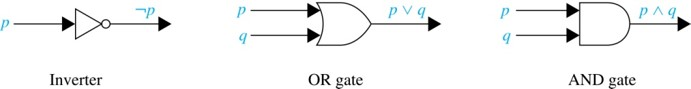
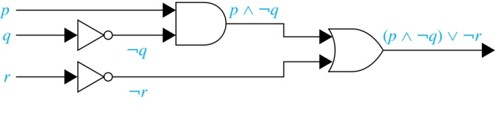

Chapter 1
The Foundations: Logic and Proofs
Warm-Up: The Menu
“Soup or salad comes with this entrée.”
You ask for both. The server refuses.
Vote — is the server wrong to refuse?
A. Yes
B. No
Warm-Up: The Syllabus
“If you turn in every lab, you pass the course.”
Dana passed the course.
Vote — does it follow that Dana turned in every lab?
A. Yes
B. No
Warm-Up: This Class
“This class is not both hard and boring.”
Vote — does that mean it is not hard, and also not boring?
A. Yes
B. No
Warm-Up: The Catch
All three claims are false — and English is why.
| Where intuition slipped | Today’s fix |
|---|---|
| 1. or means two different things | give or exactly one meaning |
| 2. if is not the same as only if | give them separate notation |
| 3. not both is not neither | check all four cases in a table |
Propositional logic is English with the ambiguity taken out — every word gets one fixed meaning, written down in a table, read the same way by everyone.
Where This Chapter Goes
- Propositional Logic (1.1–1.3)
- The Language of Propositions
- Applications
- Logical Equivalences
- Predicate Logic (1.4)
- The Language of Quantifiers
- Logical Equivalences
- Proofs (1.6–1.7)
- Rules of Inference
- Proof Methods
Section 1.1
Propositional Logic
Today’s Plan
- Propositions
- Connectives
- Negation
- Conjunction
- Disjunction
- Implication; contrapositive, inverse, converse
- Biconditional
- Truth Tables
Propositions
A proposition is a declarative sentence that is either true or false.
Are these propositions?
- The Moon is made of green cheese. ✓
- Trenton is the capital of New Jersey. ✓
- Toronto is the capital of Canada. ✓
- \(1 + 0 = 1\) ✓
- \(0 + 0 = 2\) ✓
- Sit down! ✗
- What time is it? ✗
- \(x + 1 = 2\) ✗
- \(x + y = z\) ✗
Propositional Logic
Constructing Propositions
- Propositional Variables: \(p\), \(q\), \(r\), \(s\), \(\ldots\)
- The proposition that is always true is denoted by \(\mathbf{T}\) and the proposition that is always false is denoted by \(\mathbf{F}\).
- Compound Propositions — constructed from logical connectives and other propositions
- Negation \(\neg\)
- Conjunction \(\wedge\)
- Disjunction \(\vee\)
- Implication \(\rightarrow\)
- Biconditional \(\leftrightarrow\)
Negation
The negation of a proposition \(p\) is denoted by \(\neg p\) and has this truth table:
| \(p\) | \(\neg p\) |
|---|---|
| T | F |
| F | T |
Example: If \(p\) denotes “The earth is round.”, then \(\neg p\) denotes
“It is not the case that the earth is round,” or more simply “The earth is not round.”
Conjunction
The conjunction of propositions \(p\) and \(q\) is denoted by \(p \wedge q\) and has this truth table:
| \(p\) | \(q\) | \(p \wedge q\) |
|---|---|---|
| T | T | T |
| T | F | F |
| F | T | F |
| F | F | F |
Example: If \(p\) denotes “I am at home.” and \(q\) denotes “It is raining.” then \(p \wedge q\) denotes
“I am at home and it is raining.”
Disjunction
The disjunction of propositions \(p\) and \(q\) is denoted by \(p \vee q\) and has this truth table:
| \(p\) | \(q\) | \(p \vee q\) |
|---|---|---|
| T | T | T |
| T | F | T |
| F | T | T |
| F | F | F |
Example: If \(p\) denotes “I am at home.” and \(q\) denotes “It is raining.” then \(p \vee q\) denotes
“I am at home or it is raining.”
Why Not Just English?
A teammate “simplifies” your access check during code review:
Vote — do these two lines behave the same?
A. Same
B. Different
Why Not Just English?
Write \(a\) for isAdmin and \(l\) for isLoggedIn:
| \(a\) | \(l\) | \(\neg(a \wedge l)\) | \(\neg a \wedge \neg l\) |
|---|---|---|---|
| T | T | F | F |
| T | F | T | F |
| F | T | T | F |
| F | F | T | T |
Two rows of four disagree — and row 2 is a logged-out admin walking straight in.
That is what the notation buys: not shorter writing, decidable writing.
Short-Circuit Evaluation
- \(p \wedge q\) is Java’s
p && q - \(p \vee q\) is Java’s
p || q
Look at the last two rows of the \(\wedge\) table: when \(p\) is F, the conjunction is F whatever \(q\) turns out to be — so Java never bothers to evaluate \(q\). Short-circuit evaluation is a truth table doing real work.
The Connective Or in English
In English “or” has two distinct meanings.
- “Inclusive Or” — In the sentence “Students who have taken CS202 or Math120 may take this class,” we assume that students need to have taken one of the prerequisites, but may have taken both. This is the meaning of disjunction. For \(p \vee q\) to be true, either one or both of \(p\) and \(q\) must be true.
The Connective Or in English
- “Exclusive Or” — When reading the sentence “Soup or salad comes with this entrée,” we do not expect to be able to get both soup and salad. This is the meaning of Exclusive Or (Xor). In \(p \oplus q\), one of \(p\) and \(q\) must be true, but not both. The truth table for \(\oplus\) is:
| \(p\) | \(q\) | \(p \oplus q\) |
|---|---|---|
| T | T | F |
| T | F | T |
| F | T | T |
| F | F | F |
The Connective Or in English
\(\oplus\) is not a fifth connective to memorize — it is shorthand for something you can already write:
| \(p\) | \(q\) | \(p \vee q\) | \(\neg(p \wedge q)\) | \((p \vee q) \wedge \neg(p \wedge q)\) | \(p \oplus q\) |
|---|---|---|---|---|---|
| T | T | T | F | F | F |
| T | F | T | T | T | T |
| F | T | T | T | T | T |
| F | F | F | T | F | F |
The last two columns match — English’s exclusive or is already expressible with \(\vee\), \(\wedge\), and \(\neg\).
Implication
If \(p\) and \(q\) are propositions, then \(p \rightarrow q\) is a conditional statement or implication which is read as “if \(p\), then \(q\)” and has this truth table:
| \(p\) | \(q\) | \(p \rightarrow q\) |
|---|---|---|
| T | T | T |
| T | F | F |
| F | T | T |
| F | F | T |
Implication
Example: If \(p\) denotes “I am at home.” and \(q\) denotes “It is raining.” then \(p \rightarrow q\) denotes “If I am at home then it is raining.”
In \(p \rightarrow q\), \(p\) is the hypothesis (antecedent or premise) and \(q\) is the conclusion (or consequence).
Understanding Implication
- In \(p \rightarrow q\) there does not need to be any connection between the antecedent or the consequent. The “meaning” of \(p \rightarrow q\) depends only on the truth values of \(p\) and \(q\).
These implications are perfectly fine, but would not be used in ordinary English.
- “If the moon is made of green cheese, then I have more money than Bill Gates.”
- “If the moon is made of green cheese then I’m on welfare.”
- “If \(1 + 1 = 3\), then your grandma wears combat boots.”
Understanding Implication
One way to view the logical conditional is to think of an obligation or contract.
- “If I am elected, then I will lower taxes.”
- “If you get 100% on the final, then you will get an A.”
If the politician is elected and does not lower taxes, then the voters can say that he or she has broken the campaign pledge. Something similar holds for the professor. This corresponds to the case where \(p\) is true and \(q\) is false.
Expressing \(p \rightarrow q\)
- if \(p\), then \(q\)
- if \(p\), \(q\)
- \(q\) unless \(\neg p\)
- \(q\) if \(p\)
- \(q\) whenever \(p\)
- \(q\) follows from \(p\)
- a necessary condition for \(p\) is \(q\)
- \(p\) implies \(q\)
- \(p\) only if \(q\)
- \(q\) when \(p\)
- \(p\) is sufficient for \(q\)
- \(q\) is necessary for \(p\)
- a sufficient condition for \(q\) is \(p\)
Point the Arrow
Let \(g\): “you graduate.” \(p\): “you pass CSCI 2322.”
Point left or right — which way does the arrow go?
- You can graduate only if you pass 2322. \(g \rightarrow p\)
- You graduate whenever you pass 2322. \(p \rightarrow g\)
- Passing 2322 is necessary for graduating. \(g \rightarrow p\)
- Passing 2322 is sufficient for graduating. \(p \rightarrow g\)
- You graduate unless you fail 2322. \(p \rightarrow g\)
Related Conditionals
From \(p \rightarrow q\) we can form new conditional statements.
- \(q \rightarrow p\) is the converse of \(p \rightarrow q\)
- \(\neg q \rightarrow \neg p\) is the contrapositive of \(p \rightarrow q\)
- \(\neg p \rightarrow \neg q\) is the inverse of \(p \rightarrow q\)
Related Conditionals
Example: Find the converse, inverse, and contrapositive of “It is raining is a sufficient condition for me not going to town.”
Solution:
- converse: If I do not go to town, then it is raining.
- inverse: If it is not raining, then I will go to town.
- contrapositive: If I go to town, then it is not raining.
Biconditional
If \(p\) and \(q\) are propositions, then we can form the biconditional proposition \(p \leftrightarrow q\), read as “\(p\) if and only if \(q\).” The biconditional \(p \leftrightarrow q\) denotes the proposition with this truth table:
| \(p\) | \(q\) | \(p \leftrightarrow q\) |
|---|---|---|
| T | T | T |
| T | F | F |
| F | T | F |
| F | F | T |
Example: If \(p\) denotes “I am at home.” and \(q\) denotes “It is raining.” then \(p \leftrightarrow q\) denotes “I am at home if and only if it is raining.”
Expressing the Biconditional
Some alternative ways “\(p\) if and only if \(q\)” is expressed in English:
- \(p\) is necessary and sufficient for \(q\)
- if \(p\) then \(q\), and conversely
- \(p\) if \(q\)
Truth Tables
Construction of a truth table:
- Rows — need a row for every possible combination of values for the atomic propositions.
- Columns
- Need a column for the compound proposition (usually at far right)
- Need a column for the truth value of each expression that occurs in the compound proposition as it is built up. This includes the atomic propositions.
Example Truth Table
Example: Construct a truth table for \(p \vee q \rightarrow \neg r\).
| \(p\) | \(q\) | \(r\) | \(\neg r\) | \(p \vee q\) | \(p \vee q \rightarrow \neg r\) |
|---|---|---|---|---|---|
| T | T | T | F | T | F |
| T | T | F | T | T | T |
| T | F | T | F | T | F |
| T | F | F | T | T | T |
| F | T | T | F | T | F |
| F | T | F | T | T | T |
| F | F | T | F | F | T |
| F | F | F | T | F | T |
Equivalent Propositions
Two propositions are equivalent if they always have the same truth value.
Example: Show using a truth table that the conditional is equivalent to the contrapositive.
Solution:
| \(p\) | \(q\) | \(\neg p\) | \(\neg q\) | \(p \rightarrow q\) | \(\neg q \rightarrow \neg p\) |
|---|---|---|---|---|---|
| T | T | F | F | T | T |
| T | F | F | T | F | F |
| F | T | T | F | T | T |
| F | F | T | T | T | T |
Problem
Example: How many rows are there in a truth table with \(n\) propositional variables?
Solution: \(2^n\)
Operator Precedence
| Operator | Precedence |
|---|---|
| \(\neg\) | 1 |
| \(\wedge\) | 2 |
| \(\vee\) | 3 |
| \(\rightarrow\) | 4 |
| \(\leftrightarrow\) | 5 |
\(p \vee q \rightarrow \neg r\) is equivalent to \((p \vee q) \rightarrow \neg r\).
If the intended meaning is \(p \vee (q \rightarrow \neg r)\) then parentheses must be used.
Section 1.2
Applications of Propositional Logic
Section Summary
- Translating English to Propositional Logic
- System Specifications
- Logic Puzzles
- Logic Circuits
Translating English Sentences
Steps to convert an English sentence to a statement in propositional logic:
- Identify atomic propositions and represent using propositional variables.
- Determine appropriate logical connectives
Translating English Sentences
Example: “If I go to school or to the gym, I will not go shopping.”
- \(p\): I go to school
- \(q\): I go to the gym
- \(r\): I will go shopping
Solution: If \(p\) or \(q\) then not \(r\).
\[(p \vee q) \rightarrow \neg r\]
Example
Problem: Translate the following sentence into propositional logic:
“You can access the Internet from campus only if you are a computer science major or you are not a freshman.”
One Solution: Let \(a\), \(c\), and \(f\) represent respectively “You can access the internet from campus,” “You are a computer science major,” and “You are a freshman.”
\[a \rightarrow (c \vee \neg f)\]
System Specifications
System and Software engineers take requirements in English and express them in a precise specification language based on logic.
Example: Express in propositional logic: “The automated reply cannot be sent when the file system is full.”
Solution: One possible solution: Let \(p\) denote “The automated reply can be sent” and \(q\) denote “The file system is full.”
\[q \rightarrow \neg p\]
Consistent Specifications
Definition: A list of propositions is consistent if it is possible to assign truth values to the proposition variables so that each proposition is true.
Exercise: Are these specifications consistent?
- “The diagnostic message is stored in the buffer or it is retransmitted.”
- “The diagnostic message is not stored in the buffer.”
- “If the diagnostic message is stored in the buffer, then it is retransmitted.”
Consistent Specifications
Solution: Let \(p\) denote “The diagnostic message is stored in the buffer.” Let \(q\) denote “The diagnostic message is retransmitted.” The specification can be written as \(p \vee q\), \(\neg p\), \(p \rightarrow q\). When \(p\) is false and \(q\) is true all three statements are true. So the specification is consistent.
Exercise (continued): What if “The diagnostic message is not retransmitted” is added?
Solution: Now we are adding \(\neg q\) and there is no satisfying assignment. So the specification is not consistent.
Logic Puzzles
An island has two kinds of inhabitants, knights, who always tell the truth, and knaves, who always lie.
You go to the island and meet A and B.
- A says “B is a knight.”
- B says “The two of us are of opposite types.”
Example: What are the types of A and B?
Logic Puzzles
Solution: Let \(p\) and \(q\) be the statements that A is a knight and B is a knight, respectively. So, then \(\neg p\) represents the proposition that A is a knave and \(\neg q\) that B is a knave.
- If A is a knight, then \(p\) is true. Since knights tell the truth, \(q\) must also be true. Then \((p \wedge \neg q) \vee (\neg p \wedge q)\) would have to be true, but it is not. So, A is not a knight and therefore \(\neg p\) must be true.
- If A is a knave, then B must not be a knight since knaves always lie. So, then both \(\neg p\) and \(\neg q\) hold since both are knaves.
Logic Circuits
Studied in depth in Chapter 12.
Electronic circuits; each input/output signal can be viewed as a 0 or 1.
- 0 represents False
- 1 represents True
Complicated circuits are constructed from three basic circuits called gates.

Logic Circuits
- The inverter (NOT gate) takes an input bit and produces the negation of that bit.
- The OR gate takes two input bits and produces the value equivalent to the disjunction of the two bits.
- The AND gate takes two input bits and produces the value equivalent to the conjunction of the two bits.
Logic Circuits
More complicated digital circuits can be constructed by combining these basic circuits to produce the desired output given the input signals by building a circuit for each piece of the output expression and then combining them. For example:


CSCI 2322 Discrete Structures for Computing